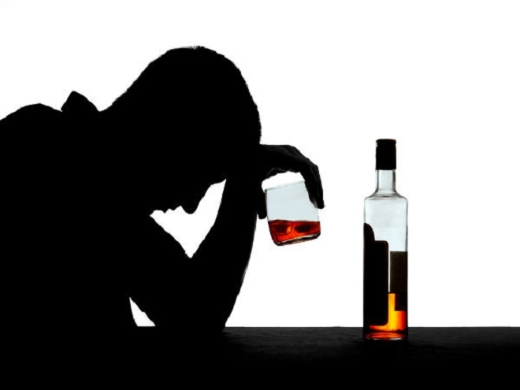

Bài viết tuyên truyền về phòng chống tác hại rượu bia - Chào mừng các bạn đến Website Trạm y tế Giang Ly
Thứ hai ngày 23/3/2026 9:51 PM
Rượu bia là nguyên nhân hàng đầu gây độc mãn tính, phá hủy nội tạng và tiềm ẩn nguy cơ ung thư cao. Việc lạm dụng rượu bia gây tổn thương gan , não bộ suy giảm trí nhớ, tim mạch, hệ tiêu hóa và làm suy giảm hệ miễn dịch. Tổ chức Nghiên cứu Ung thư Quốc tế xếp rượu bia vào nhóm I chất gây ung thư.

Theo Tổ chức Y tế thế giới, rượu, bia đứng hàng thứ 5 trong 10 nguyên nhân gây tử vong cao nhất trên toàn cầu. Rượu, bia và các loại đồ uống có cồn nói chung gây ảnh hưởng tiêu cực đến sức khỏe con người. Ngoài các tác hại dễ nhận thấy sau khi uống rượu, bia như đau đầu, buồn nôn, chóng mặt, mệt mỏi, chất cồn trong rượu, bia còn ảnh hưởng đến nhiều cơ quan trong cơ thể, nhất là điều khiển phương tiện tham gia giao thông khi đã sử dụng rượu, bia là nguyên nhân hàng đầu dẫn đến các vụ tai nạn, gây thương tích và cướp đi sinh mạng rất nhiều người
Lạm dụng rượu, bia được ghi nhận là gây ra các hậu quả cấp tính hoặc mạn tính, về lâu dài có thể gây ra những tổn hại rất khó hồi phục và cũng rất nguy hiểm cho sức khỏe con người. Chính vì lý do này mà chức năng ngăn các chất độc khác nhau do máu mang từ ruột hoặc ở ngoài đến của gan bị suy giảm, dẫn đến gan bị nhiễm mỡ, xơ gan hoặc có thể gây ung thư gan.
Nhiều nghiên cứu cho thấy rượu, bia là yếu tố lớn trong tái phát các bệnh lý tâm thần. Sử dụng rượu, bia nhiều sẽ gây ra một số bệnh lý rối loạn tâm thần, hoang tưởng, ảo giác, tăng lo âu, sầu uất, trầm cảm, làm gia tăng các ý tưởng tự sát hoặc xu hướng kích động tấn công. Rượu, bia làm cho cơ tim bị thoái hóa, bộ máy tim mạch bị tổn thương, biểu hiện như đau đầu, khó thở, mắt cá sưng to,... Rượu, bia còn làm giảm khả năng tấn công vi khuẩn và phòng ngừa bệnh tật của hệ miễn dịch. Chính vì thế, người say rượu rất dễ bị cảm, trúng gió,..
Ngoài ra, rượu, bia còn làm thay đổi sự hóa ứng động bạch cầu, do đó người nghiện rượu dễ mắc các bệnh nhiễm khuẩn như viêm phổi, lao phổi, nếu không phát hiện sớm có thể gây tử vong. Đây còn là nguyên nhân làm suy yếu sự trao đổi chất, gia tăng axit uric - nguyên nhân của bệnh gout. Người uống rượu cũng sẽ thường cảm thấy đau nhức, mỏi xương khớp. Sử dụng rượu, bia lâu dài có thể gây viêm loét dạ dày.
Việc uống rượu, bia trong một thời gian dài sẽ dẫn đến tình trạng nghiện rượu. Nghiện rượu kinh niên là một trong những nguyên nhân gây ra tổn thương não. Thai phụ uống rượu, bia có thể tác động xấu đến bào thai vì không nhận được oxy và chất dinh dưỡng. Bên cạnh đó, thai nhi còn có thể bị tác hại của bia, rượu gây dị dạng ở mặt, các cơ quan khác hoặc chậm phát triển trí tuệ.
Ngoài những tác hại đến sức khỏe con người, rượu, bia còn gây các vấn đề xã hội như suy giảm chất lượng nhân lực, chất lượng dân số, phá vỡ các mối quan hệ gia đình, người xung quanh cũng như cộng đồng xã hội. Khi sử dụng rượu, bia, người uống không còn minh mẫn và không thể làm chủ hành động cũng như suy nghĩ của mình. Trên thực tế đã xảy ra rất nhiều trường hợp thương tâm do rượu, bia gây nên. Đó là những vụ người say rượu có những hành vi nguy hiểm cho xã hội như chửi bới, đánh đập, phá hoại tài sản, gây xích mích với người thân và cộng đồng, thậm chí là các vụ ẩu đả dẫn tới thương vong.
Với tác hại của rượu, bia, nếu nhẹ thì lơ mơ, buồn ngủ, rồi giảm tầm nhìn; nặng thì không kiểm soát được hành vi và sự phán đoán có thể bị sai lệch nên không làm chủ được tay lái. Vì vậy, điều khiển phương tiện giao thông sau khi sử dụng rượu, bia đã gây ra rất nhiều vụ tai nạn giao thông thương tâm.
Sử dụng rượu, bia nhiều và thường xuyên gây ra nhiều hệ lụy đối với sức khỏe và sự phát triển kinh tế - xã hội. Chính vì thế, việc phòng, chống tác hại của rượu, bia là một yêu cầu bức thiết được Nhà nước và xã hội quan tâm giải quyết với các biện pháp đồng bộ, toàn diện. Trong đó, có ban hành Luật Phòng, chống tác hại của rượu, bia để góp phần hạn chế gánh nặng gây ra đối với cá nhân, gia đình, cộng đồng và xã hội.
Hãy từ chối rượu, bia trước khi quá muộn, đó là lời cảnh tỉnh cho những ai đang hàng ngày sử dụng rượu bia như một thói quen. Đây là một việc làm cần thiết và cấp bách ,đến lúc chúng ta phải nghiêm túc thực hiện ngay từ hôm nay " Phòng chống tác hại rượu bia - bảo vệ tương lai" để có một cuộc sống khỏe mạnh, một xã hội an toàn, văn minh.
Source : ChiLeNguyen - Trạm y tế Giang Ly - Tây Khánh Vĩnh - Khánh Hoà
